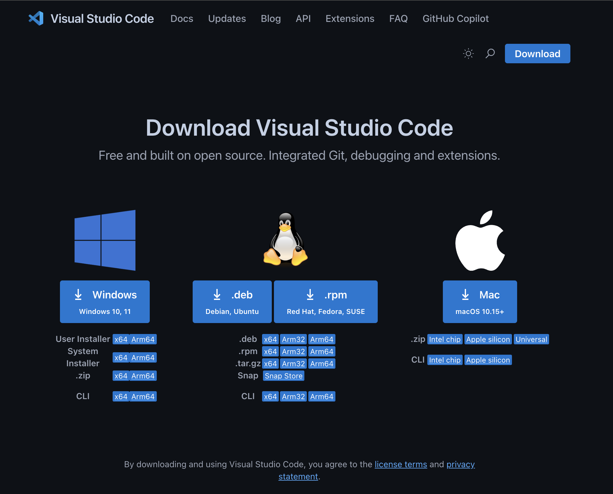
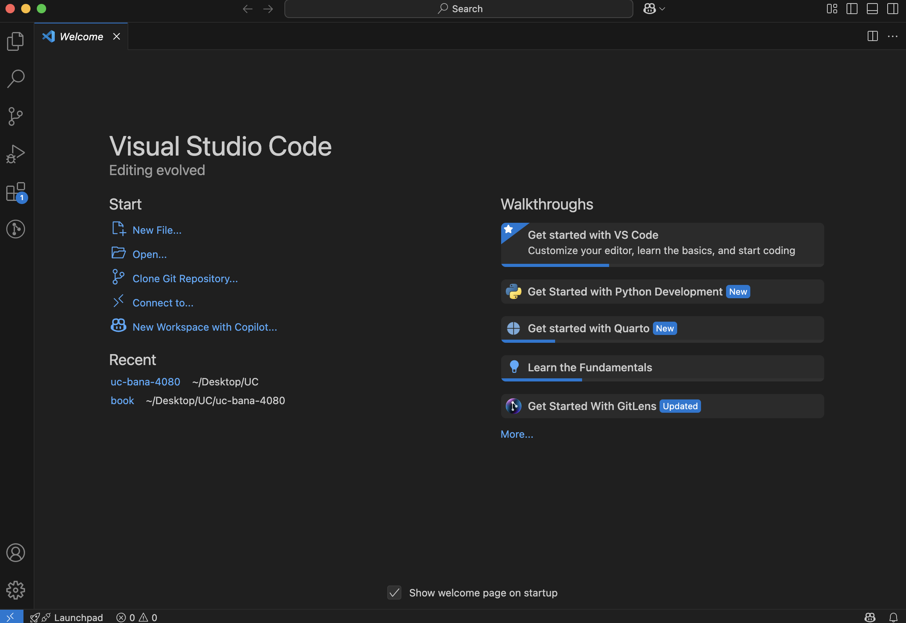
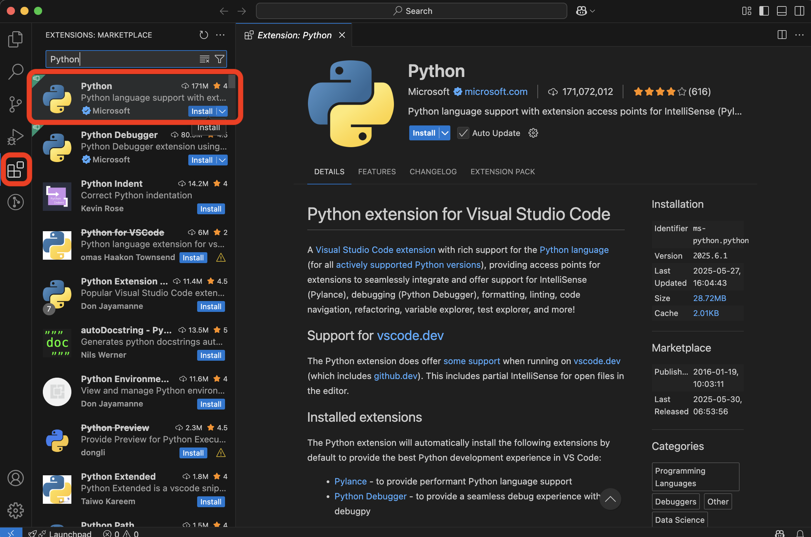
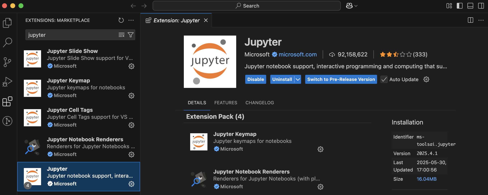
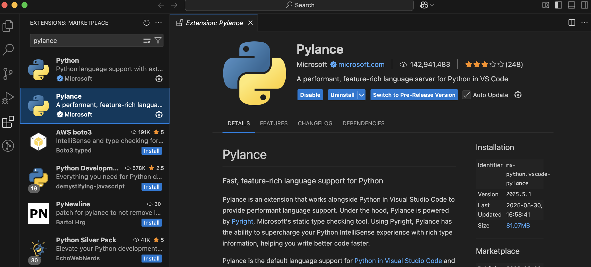
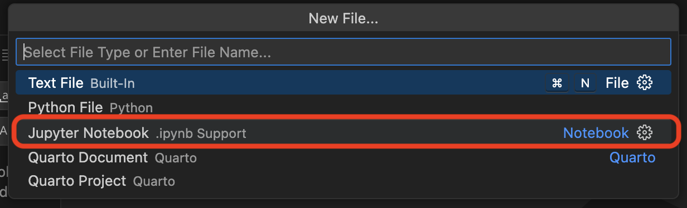
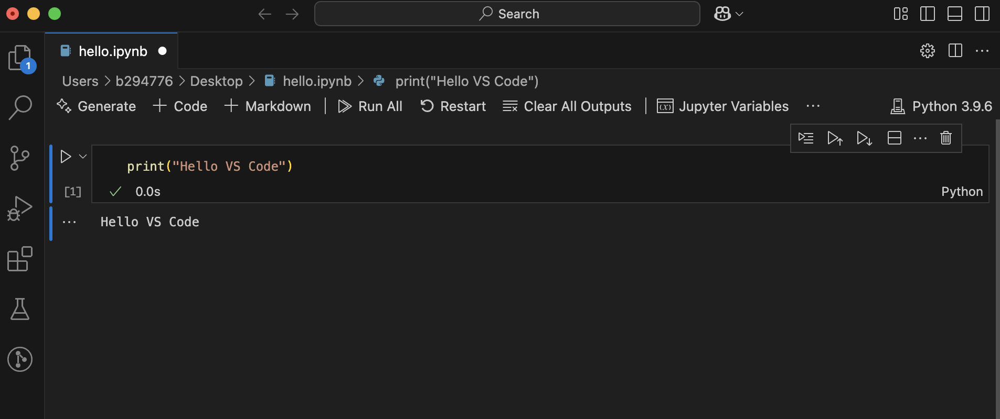

36 VS Code Installation
Visual Studio Code (VS Code) is a free, lightweight, and powerful code editor used by developers and data scientists around the world. It’s highly customizable and supports many programming languages and tools—including Python.
VS Code is more than just a text editor. With the right extensions, it can run code, work with Jupyter notebooks, help you manage projects, and even connect to Git for version control. It’s one of the most widely used environments in the industry and is likely the tool you’ll encounter in internships or full-time roles.
While it may feel more advanced than Anaconda Navigator or JupyterLab, VS Code offers more flexibility and control as your projects grow. In this guide, we’ll walk you through getting started with VS Code for Python programming and data science.
If you’re still getting comfortable with Python, it’s totally fine to continue using JupyterLab for now. This guide is here to support you when you’re ready to level up your development environment.
36.1 Installing VS Code
- Visit the official VS Code website: https://code.visualstudio.com
- Click Download and select the installer for your operating system (Windows, macOS, or Linux). 
- Run the installer and follow the default prompts.
Windows-Specific Notes:
- Allow the installer to add VS Code to your system PATH (this helps you launch it from the command line).
- You can also enable options to open VS Code from the right-click context menu for added convenience.
macOS-Specific Notes:
- Drag and drop the VS Code application into your Applications folder.
- Open it via Spotlight Search (Cmd + Space → “Visual Studio Code”).
Once installed, you should be able to open VS Code and access its interface.
- On Windows: Click the Start menu, type “Visual Studio Code,” and press Enter. If you checked the box to add VS Code to the system PATH, you can also open a Command Prompt or PowerShell window and type
codeto launch it. - On macOS: Open Spotlight Search by pressing
Cmd + Space, type “Visual Studio Code,” and press Enter. If you installed the command line tool, you can also open a Terminal window and typecode.
This should open the VS Code editor which will look like:

If you have any issues during setup, check out the VS Code setup docs for details around system requirements, more detailed setups for each operating system, along with common questions.
In the next section, we’ll help you install the necessary extensions to begin working with Python inside VS Code.
36.2 Installing the Python Extension
To use Python inside VS Code, you’ll need two things:
- A Python interpreter: This is the program that actually runs your Python code. If you’ve already installed Anaconda, you’re all set—Anaconda includes a Python interpreter. If you haven’t (for example, if you’re coming straight from using Colab), you’ll need to install Python separately. You can download the latest version from https://www.python.org/downloads/.
- The official Python extension provided by Microsoft: This extension adds support for writing, running, and debugging Python code in VS Code, and helps you work with virtual environments. To install this extension:
- Open VS Code.
- Click on the Extensions icon on the left sidebar (or press
Ctrl+Shift+X/Cmd+Shift+X). - In the search bar, type “Python” and look for the extension authored by Microsoft.
- Click Install. 
Once installed, the Python extension will automatically detect Python interpreters on your system and provide features such as syntax highlighting, auto-complete, linting, and integrated terminal support.
While You’re at It: Install These Additional Extensions
To get the most out of VS Code for Python and Jupyter work, we recommend installing the following extensions now:
- Jupyter: Enables Jupyter Notebook support within VS Code. 
- Pylance: Improves code intelligence and type checking. 
After installing these extensions, you’re ready to start writing and running Python code in VS Code!
Understanding Extensions in VS Code
Extensions are small add-ons that enhance the functionality of VS Code. Think of them like plugins—they allow you to customize your coding environment based on your needs.
Some extensions help you write and run code in specific languages, while others add support for tools like Git, Jupyter notebooks, or data visualization libraries.
Here are a few common extensions for data science workflows:
- Python (by Microsoft) – Adds Python language support
- Jupyter – Enables Jupyter Notebook support
- Pylance – Adds fast, accurate code intelligence and type checking
- GitLens – Enhances Git capabilities directly in VS Code
- Code Runner – Allows you to run snippets of code from many languages
To explore more extensions:
- Click the Extensions icon in the sidebar.
- Browse featured or recommended extensions.
- Use the search bar to find tools that match your interests.
You don’t need to install a lot of extensions to get started. As you become more experienced, you’ll naturally add tools that support your workflow and projects.
36.3 Creating Your First Jupyter Notebook
Now that VS Code is set up with Python and Jupyter support, let’s walk through creating your first Jupyter notebook and running a simple Python command.
Steps to Create and Run a Notebook:
- Open VS Code.
- Click File → New File → select Jupyter Notebook 
- Let’s go ahead and save this file. Go to File → Save As and you can select where you want to save this file to and also rename it (e.g.,
hello.ipynb). - VS Code will recognize this as a Jupyter notebook and open an interactive notebook interface.
- In the first cell, type:
print("Hello VS Code")- Click the Run Cell button (the small ▶️ icon) to the left of the cell, or press
Shift + Enter. You should see the outputHello VS Codeas below.

Congratulations! You’ve just run your first Jupyter notebook in VS Code. You’re now ready to use this environment for more advanced analysis and coding throughout the course.
Here’s a great video to get you up and running with Jupyter notebooks in VS Code!
36.4 Exploring the VS Code Interface
VS Code is packed with features, but you don’t need to use them all right away. As you become more comfortable with VS Code and your data science skills grow, you’ll naturally start using more of its capabilities. Here are some of the features you’ll find yourself using most often:
- Explorer (📁 icon): View and manage your project files.
- Run and Debug (▶️ icon): Run code or set up debugging tools.
- Extensions (🔌 icon): Install and manage extensions.
- Integrated Terminal: Open a terminal inside VS Code using
Ctrl + `` orCmd + `` (backtick). - Notebook Interface: When working in
.ipynbfiles, you can use cells to write and run code interactively.
If the interface feels overwhelming at first, don’t worry. Start by focusing on writing and running Python code—over time, you’ll naturally grow into the more advanced features.
Here is a nice video that will introduce you to some of VS Code’s features. Don’t worry about understanding the code shown or what all these features mean right now—just watch to get a sense of what VS Code can do!
36.5 Troubleshooting Tips
If you run into issues while setting up or using VS Code, here are some tips:
- VS Code doesn’t install:: If you have any issues during setup, check out the VS Code setup docs for details around system requirements, more detailed setups for each operating system, along with common questions.
- VS Code installs but doesn’t launch:
- Make sure the installation finished successfully and you can find the application on your computer
- On Windows: Click the Start menu, type “Visual Studio Code,” and press Enter. If you checked the box to add VS Code to the system PATH, you can also open a Command Prompt or PowerShell window and type
codeto launch it. - On macOS: Open Spotlight Search by pressing
Cmd + Space, type “Visual Studio Code,” and press Enter. If you installed the command line tool, you can also open a Terminal window and typecode.
- On Windows: Click the Start menu, type “Visual Studio Code,” and press Enter. If you checked the box to add VS Code to the system PATH, you can also open a Command Prompt or PowerShell window and type
- Try restarting your machine.
- Reinstall VS Code from the official website.
- Make sure the installation finished successfully and you can find the application on your computer
- Python extension isn’t working or missing:
- Make sure it’s installed and enabled.
- Reload the window (Cmd/Ctrl + Shift + P → type
Reload Window).
- Python interpreter not found:
- Press
Ctrl+Shift+P/Cmd+Shift+Pand search for “Python: Select Interpreter”. Choose the appropriate Python version (often one installed with Anaconda). - If no Python options come up then you probably don’t have a Python interpreter installed. Go to https://www.python.org/downloads/ and download the latest version.
- Press
- Notebook cells not running:
- Make sure the Jupyter extension is installed.
- Make sure the file is saved with a
.ipynbextension.
If all else fails, try searching the error message online or ask your instructor or teaching assistant for help.
36.6 Additional Resources
If you want to learn more about using VS Code for Python and data science, here are some helpful links:
- Tutorial: Get started with Visual Studio Code
- VS Code Python Docs
- VS Code for Data Science Docs
- Jupyter Notebooks in VS Code
- Various VS Code Introductory Videos
You don’t need to master all of this at once—use these resources when you’re ready to explore more advanced features or troubleshoot issues.